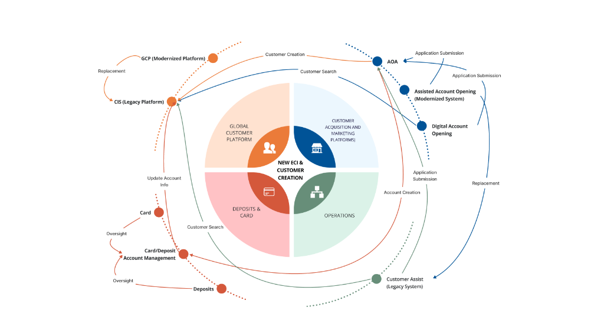
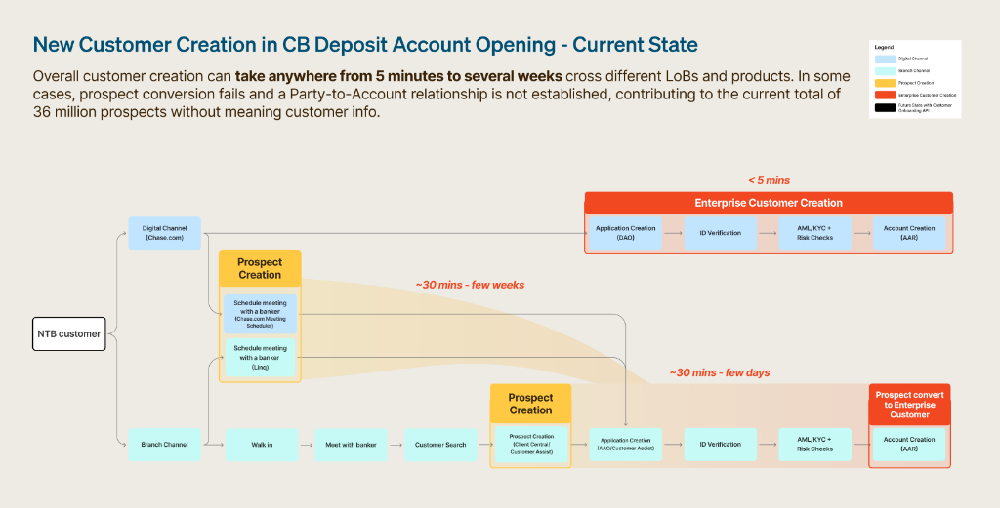
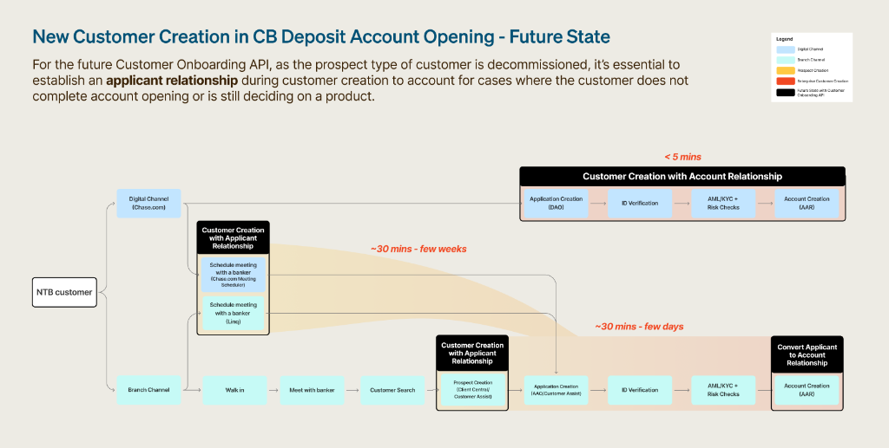
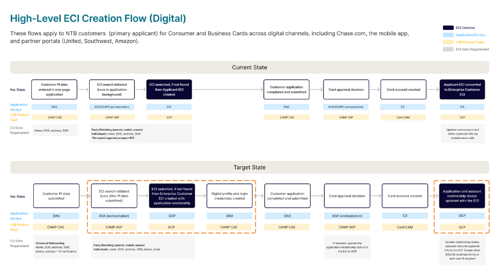

Chase Global Customer Platform

My Key Contribution
- Led service design discovery across branch + digital customer creation journeys to de-risk a single-entry onboarding API direction and clarify what “customer creation” needs to support across lines of business
- Identified recurring experience and operational breakdowns: communication gaps, data-field inconsistencies, system constraints, and data disclosure concerns, which drive errors, abandonment, and duplicate records
- Mapped current vs. target state flows and aligned recommendations with active initiatives (e.g., standardizing data collection + ID verification) to support future platformization and change management
Background
Project context
A large financial institution modernizing a firmwide customer platform to enable a more consistent onboarding experience and a unified customer record across products and channels.
Problem
New-to-bank customer creation happens differently by channel and product; inconsistent requirements and tooling create friction for both customers and frontline staff and can produce duplicate customer identifiers.
Goal
De-risk a target state that supports a single-entry customer onboarding service while accommodating different product needs and compliance controls.
My role as Service Design Lead
- Discovery planning & alignment: Framed key questions around “necessary vs optional data” and pain points in customer creation across users and channels.
- Research execution: Supported in-depth interview approach across product/tech/design stakeholders and users; combined with secondary research and journey artifacts.
- Service blueprinting & journey mapping: Documented end-to-end creation flows across digital/branch and current vs future state for deposits and cards.
- Synthesis & recommendations: Consolidated recurring challenges and aligned recommendations to ongoing standardization initiatives and change management needs.


Key Findings
| Theme | What we learned | Why it matters |
|---|---|---|
| Data disclosure & trust | Some customers are reluctant to provide basic contact details during early inquiry, which blocks creation flows or causes staff workarounds. | Early friction increases drop-off and shifts workload to staff, while weakening data quality. |
| Communication gaps | Unclear and changing onboarding instructions lead customers to arrive unprepared and frontline staff to rely on judgment, fragmenting experiences. | Increases rework, delays, and inconsistent compliance outcomes. |
| Inconsistent data requirements | Required fields vary across channels and systems for similar intents (prospect vs enterprise creation; different branch tools). | Creates errors, slows service, and generates incomplete records that break downstream processes. |
| System constraints & fallbacks | Rigid rules, manual entry, and fragmented search/match patterns cause staff to fall back to legacy tools to complete tasks. | Undermines standardization, increasing variability and cycle time. |
What I delivered

1. Current vs Target-State Journey Maps
Visualized differences in sequence/timing across digital vs branch creation for onboarding to allow leadership to see where the data collection gaps are to reduce downstream errors.
2. Service Blueprint & Ecosystem Map
This blueprint acted as the "Source of Truth" for the cross-functional teams. It mapped how a single API call would replace for and dependencies across teams/platforms to create a customer identifier.
3. Use Cases/Scenario
Identified real-world edge cases (privacy-sensitive customers, international residents, joint applicants, etc.) and resulting workarounds. This moved the conversation from "happy path" design to "resilient system" design.
Outcomes & Principal-Level Impact
- De-Risked Platformization: Provided the evidence-based green light for the "Single-Entry" API direction, preventing costly architectural pivots later in development.
- Unified the Organization: Brought together siloed teams from Deposits and Cards to agree on a single "Enterprise Customer" definition.
- Established Design Principles: Created a set of "Onboarding Principles" now used as a North Star for all future channel integrations.